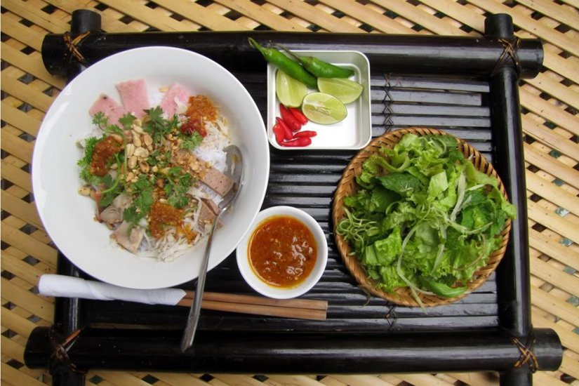
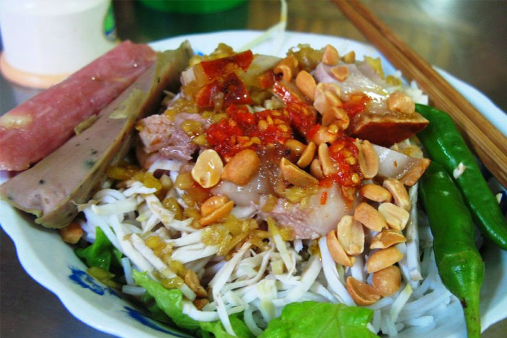

Bún mắm là món ăn có tiếng của người miền Trung, nhưng đối với người dân Đà Nẵng thì bún mắm quan trọng hơn cả. Cũng vì lẽ thế mà ăn bún mắm của Đà Nẵng có vị đặc trưng rất riêng, riêng đến nỗi theo thành cái tên từ lúc nào không hay “bún mắm Đà Nẵng”. Đối với ai chưa từng thử qua, có lẽ cảm nhận đầu tiên khi nghe cái tên này, nghĩ hẳn món ăn rất mặn, bún mắm cơ mà. Nhưng, ai đã ăn rồi, chắc chắn lại phải thèm thuồng mà nuốt nước miếng ừng ực, mường tượng ra cái vị đậm đà, ngầy ngậy ngay trong giác quan. Nào là vị thịt heo quay giòn, vị sate cay nồng, mùi bò hoi hoi, mùi rau thơm vảng vất. Đó chính là lý do vì sao bún mắm được liệt kê là một trong những món ngon Đà Nẵng nhất định phải thử khi đến đây.

Mắm nêm (hay còn gọi là mắm cái), một loại mắm cực nổi tiếng ở khu vực Đà Nẵng, Huế, Nha Trang. Mắm ngon được làm từ cá cơm tươi - những con cá mới đánh bắt vào bờ vào sáng sớm, đã được thương lái mua lại để chuyển cho những nhà làm mắm gia truyền. Cá được làm sạch sau đó cho vào hũ với tỷ lệ muối nhất định, ủ chín từ 2-3 tháng (thời gian ủ mắm còn phụ thuộc vào thời tiết, nhiệt độ môi trường nữa nhé). Mắm chín dễ dàng nhận biết với chất mắm sền sệt, màu đỏ nâu, mùi thơm tỏa ra ngào ngạt. Mắm nêm có thể dùng ăn kèm với hầu hết các món bình dân khác, có cách pha chế mắm là khác nhau thôi, tuy nhiên, thứ hợp với mắm nêm nhất chính là bún. Món ăn là sự kết hợp hài hào giữa mùi thơm của gạo từ cọng bún, hương vị mắm nêm thơm lừng, rau thơm, và không quên vị bùi bùi béo béo của mít non và đậu phông rang. Ăn vào cảm nhận từng hương vị, từ vị cay của ớt đến cái mặn mà của mắm, tất cả đã làm nên tô bún mắm khó quên trong lòng những người dân nơi đây và cả du khách gần xa đã từng 1 lần thưởng thức.
Ra quán gọi một tô bún mắm Đà Nẵng, sẽ thấy món ăn đầy đặn hết biết. Dưới cùng của đáy tô là các loại rau sống, tiếp đến là bún tươi, trên cùng là “topping” thịt heo quay, nem chua, giò chả, dưa chuột,… Mỗi nơi thì phần nhân bún lại có đôi chút khác biệt, nhưng tựa chung lại thì vẫn phải hài hòa theo đúng cái chuẩn mực hương vị của món ăn. Và đương nhiên không thể thiếu rau thơm cắt nhỏ, được rắc lên trên cùng của bát bún cùng ít lạc rang đã được xóc sạch vỏ.
Bên cạnh những thứ được bày biện hết sức đẹp đẽ tinh tươm ấy là bát mắm nêm, khách ăn bao nhiêu thì lấy bấy nhiêu, tùy theo khẩu vị, kẻo người thì ăn mặn, người ăn nhạt khó chiều. Trộn đều hỗn hợp đó lên rồi ngồi rung đùi, lim dim mắt mà thưởng thức. Chà, cái vị ngọt thịt của miếng heo quay, lại xen vào cái mát lành của miếng dưa chuột thái vát, thêm chút chua dịu của thanh nem mới. Hương rau thơm đồng nội, nó át hẳn cái vị tanh tao của mắm, chỉ còn đọng lại trong khoang miệng những ngọt ngào hòa quyện của vị món ăn mà thôi.
Nói đến đặc trưng của món ăn miền Trung, có lẽ không thể nào mà thiếu đi cái vị cay tê tái đầy kích thích vị giác được. Và bún mắm Đà Nẵng, nói trước, chắc chắn là có cái vị xé lưỡi đó. Ngồi ăn tô bún mà xuýt xoa liên tục mãi không thôi, bún ngon mà thêm vị cay đó thì ăn mãi không ngán được đâu. Lưu ý nhỏ cho bạn nào không ăn được cay thì có thể nói chủ quán giảm cay cho nhé, và vì mắm nêm có mùi khăm khẳm khá đặc trưng nên có thể lần đầu ăn hơi ái ngại nhưng ăn nhiều thì sẽ quen và nghiện luôn đấy.
Địa chỉ quán ăn
Phố bún mắm: Trần Kế Xương giao Đoàn Thị Điểm, Trần Bình Trọng
Bún mắm bà Thuyên: K424/03 Lê Duẩn, P. Chính Gián, Quận Thanh Khê, Đà Nẵng
Quán Ngọc: 20 Đoàn Thị Điểm, Quận Hải Châu, Đà Nẵng